Undergraduate Research Society
Florida International University
Florida International University
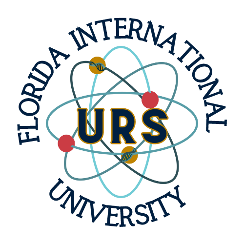
A student organization with 1000+ members dedicated to connecting undergraduate students with research opportunities, professional development, and academic networking across FIU.
URS supports students interested in research across all disciplines by sharing opportunities, hosting workshops, and building a strong research community on campus.
Become part of a community of over 1,000 students interested in research, professional development, and academic networking. URS is open to students of all majors and experience levels-from those exploring research for the first time to experienced student researchers.
Join on FIU PantherConnectResearch Expo: A spring career fair-style event showcasing undergraduate research opportunities, labs, and academic programs across campus. Research Expo connects students with faculty, research labs, and campus organizations while highlighting the diverse research opportunities available at FIU.


The Undergraduate Research Society is led by a dedicated team of student leaders committed to connecting students with research opportunities and professional development.
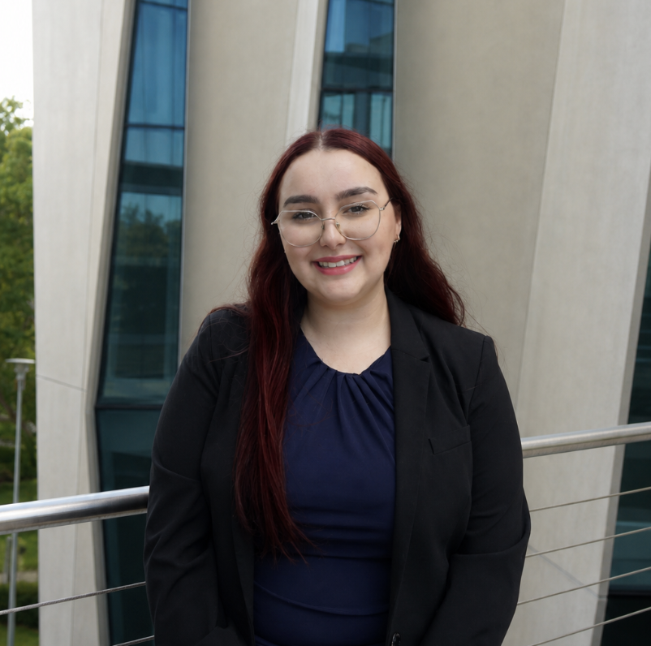
President
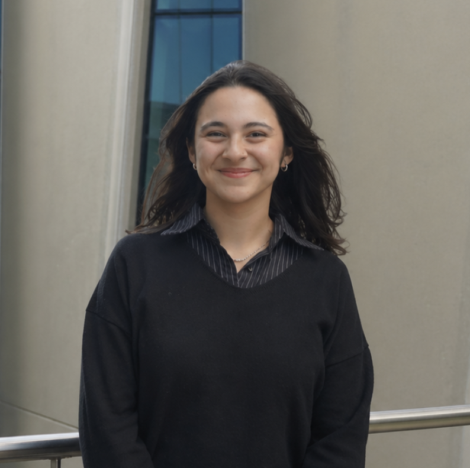
Vice President
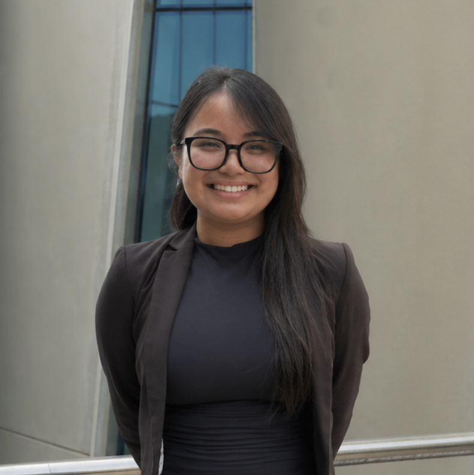
Senior Director of Strategic Initiatives
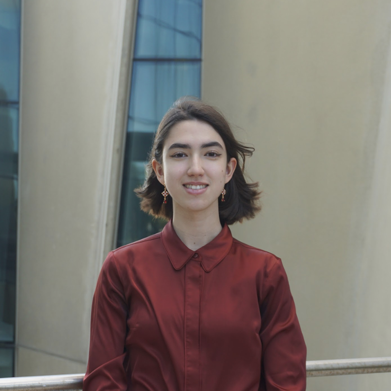
Secretary
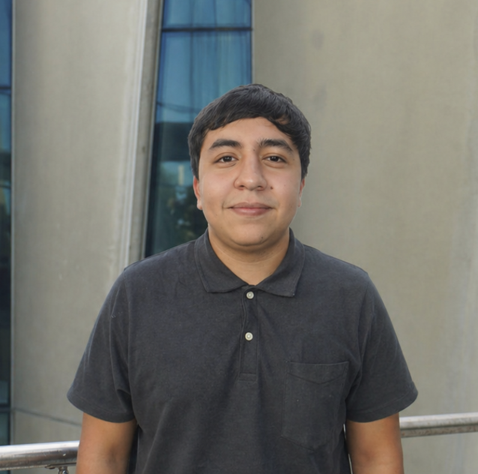
Treasurer
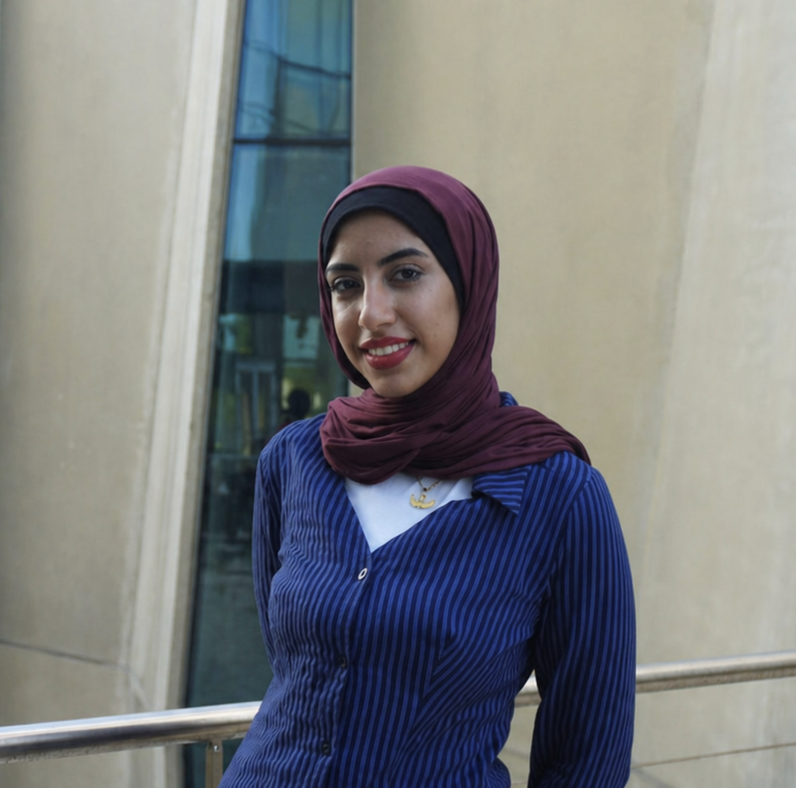
Marketing Director
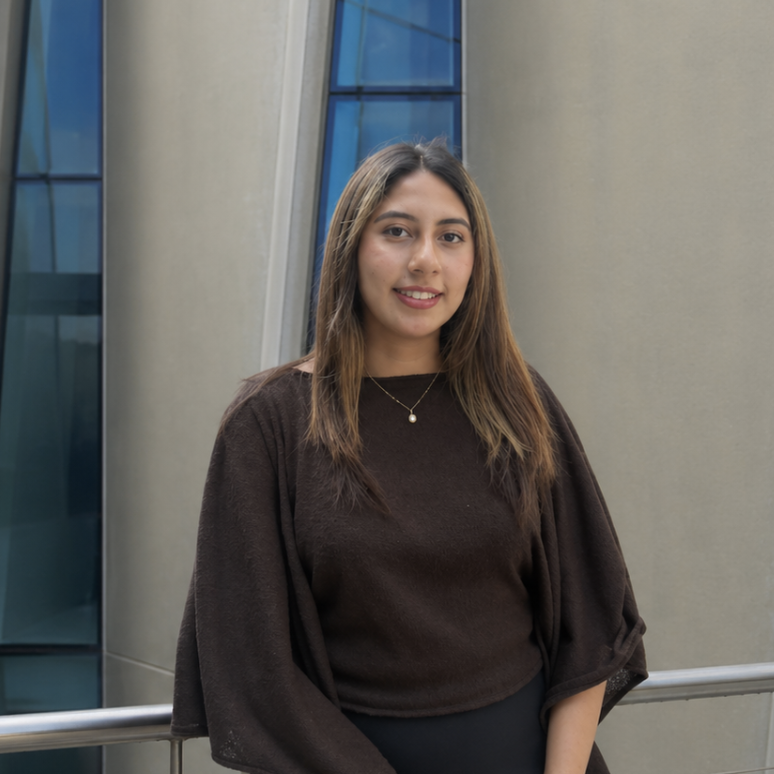
RSO Representative
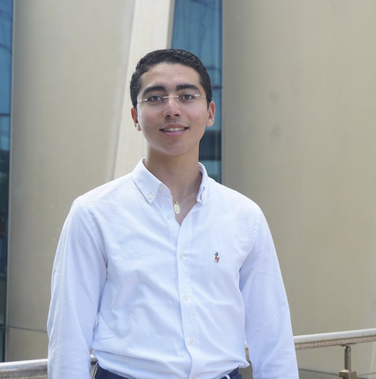
Outreach Director - Faculty
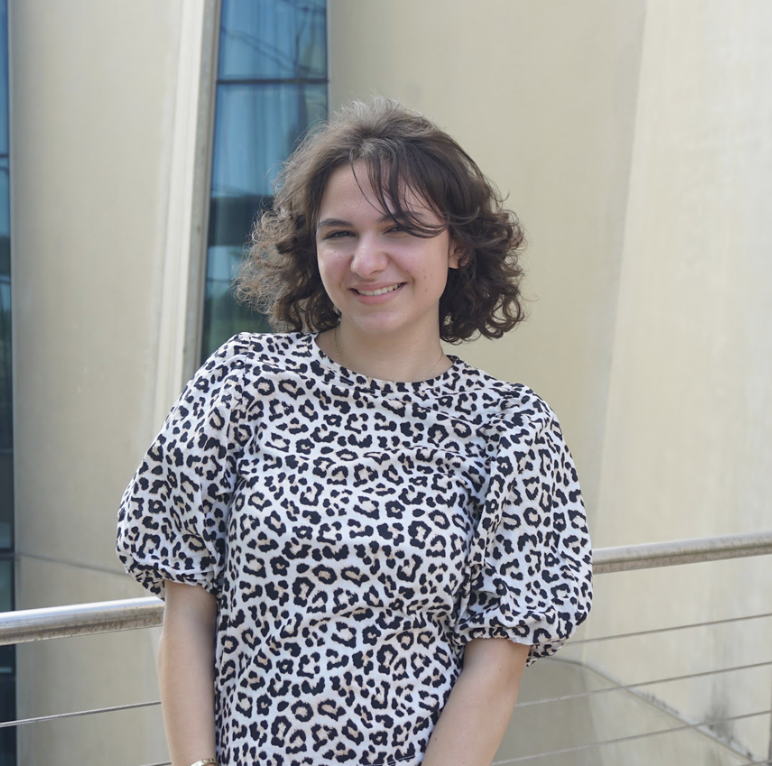
Outreach Director - Student
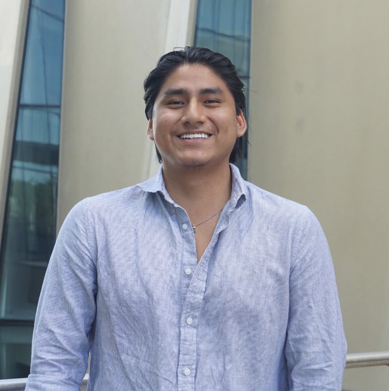
Peer Advising Director
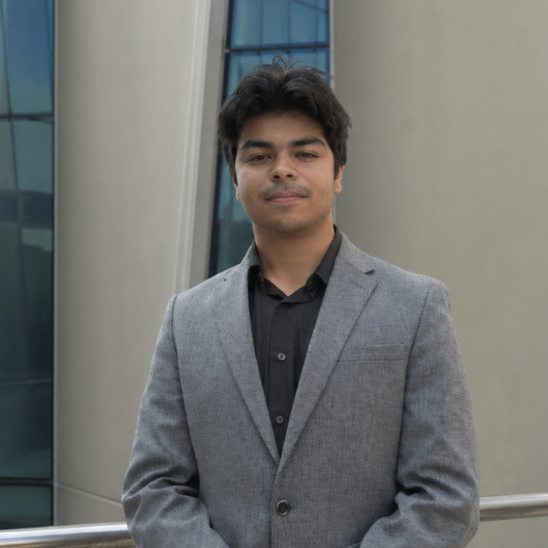
Assistant Peer Advising Director
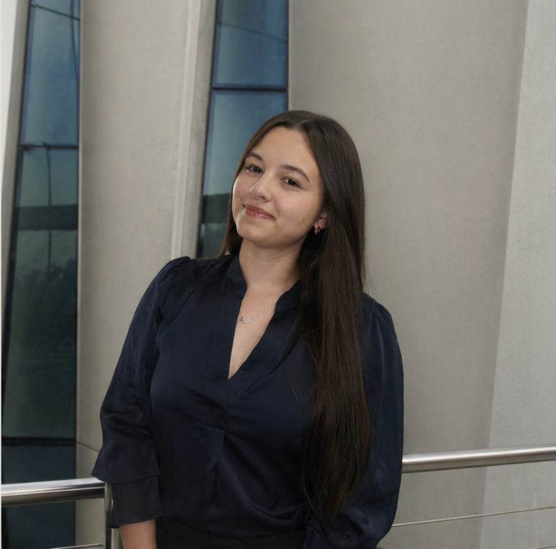
Special Project Director
The Special Projects Committee supports URS initiatives, events, and strategic programming to enhance student engagement and research opportunities.
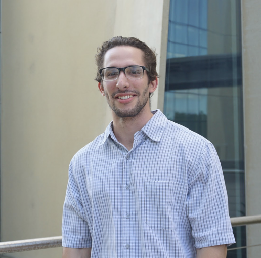
Committee Member
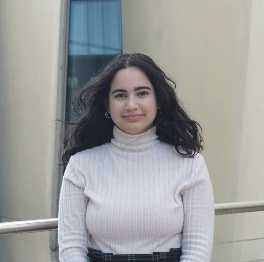
Committee Member
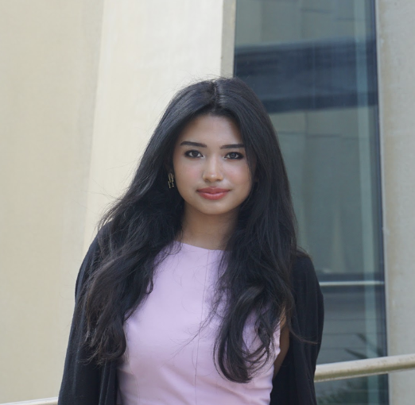
Committee Member
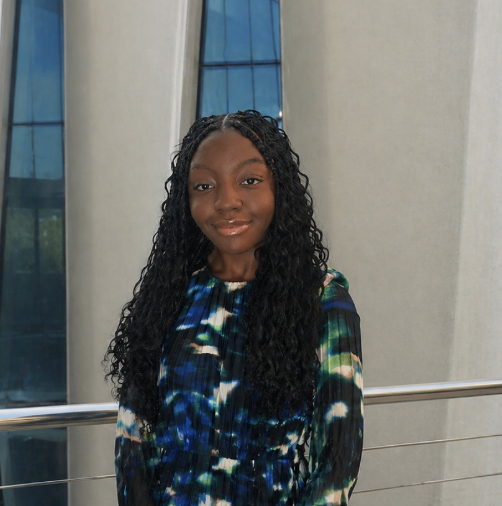
Committee Member
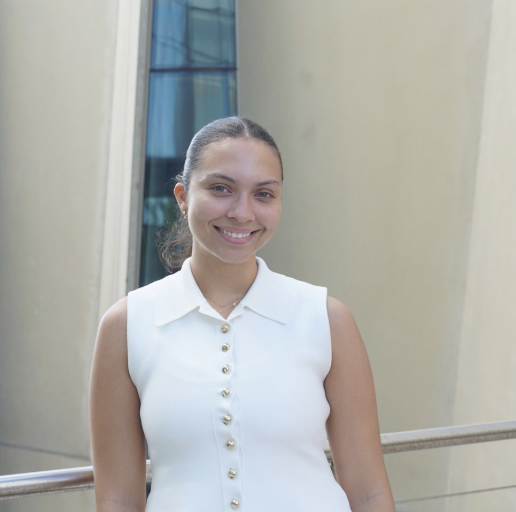
Committee Member
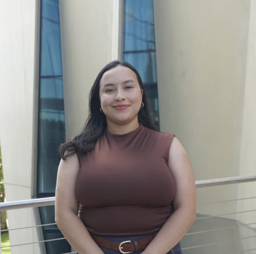
Committee Member
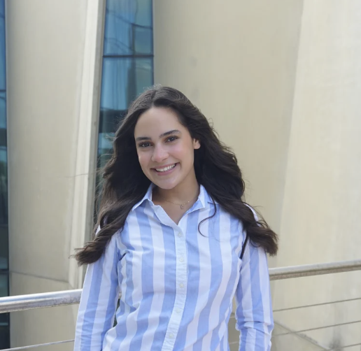
Committee Member
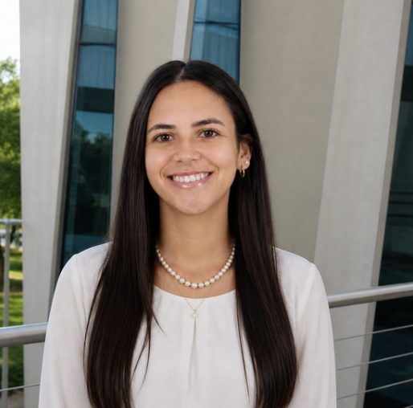
Committee Member
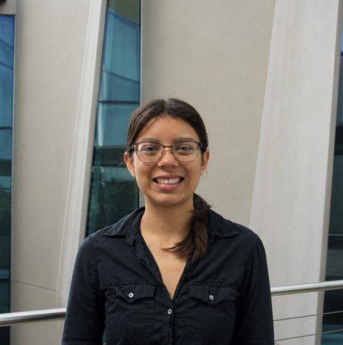
Committee Member
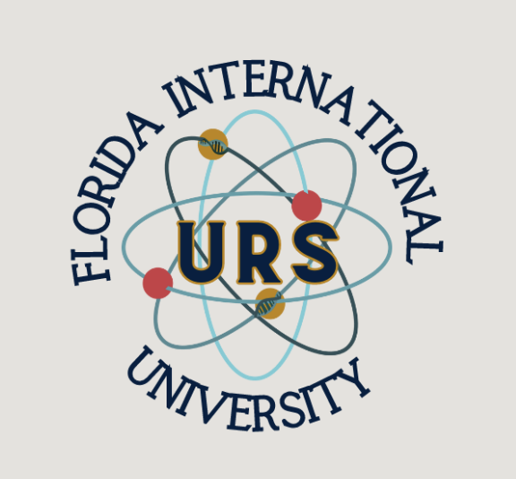
Committee Member